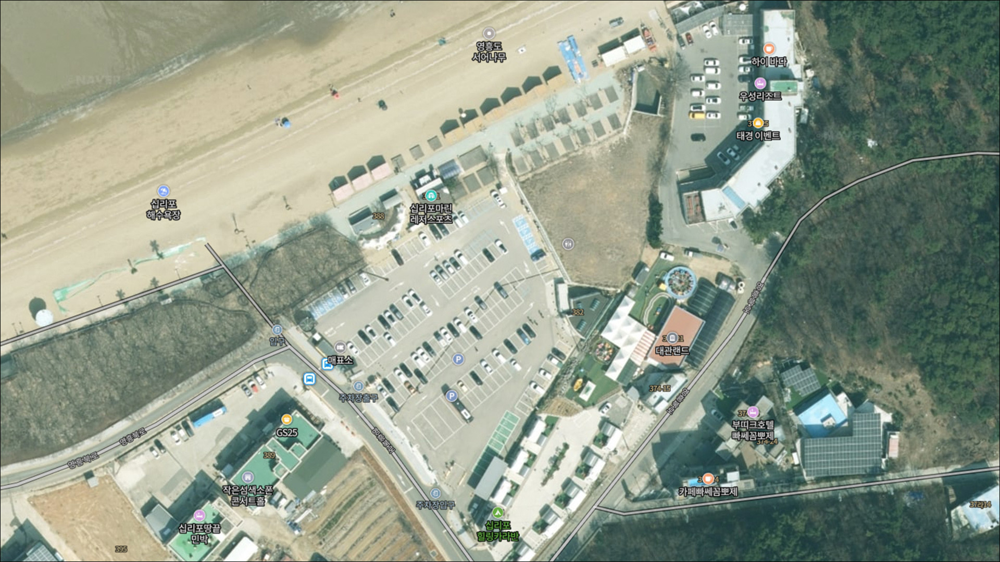
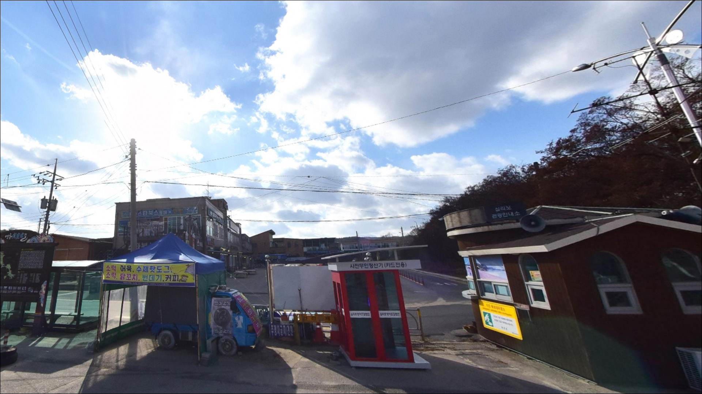
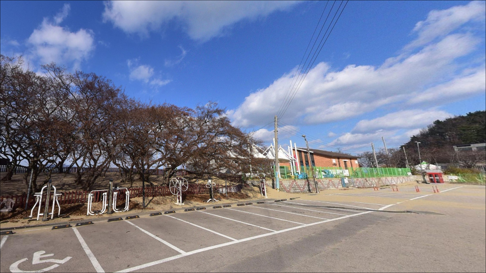
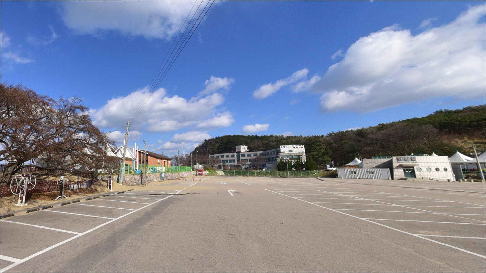
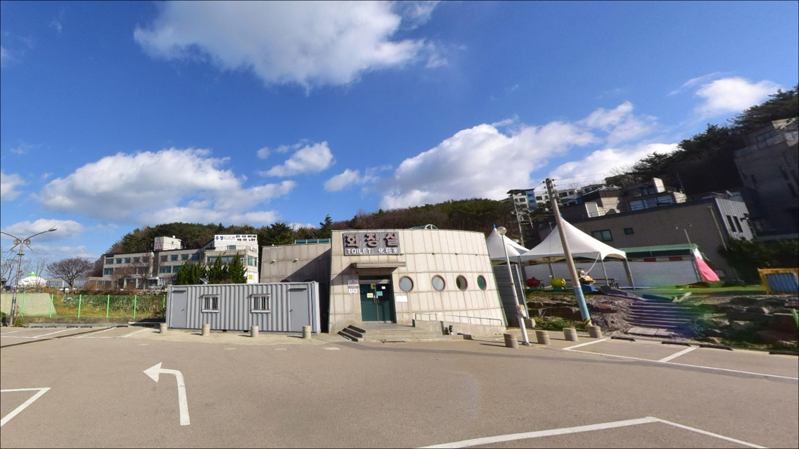
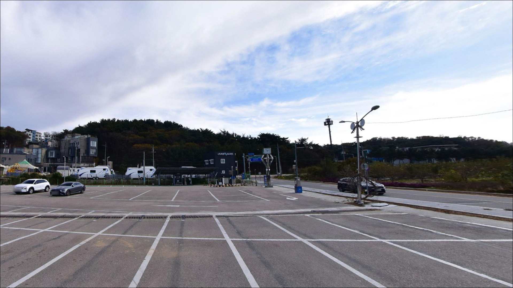
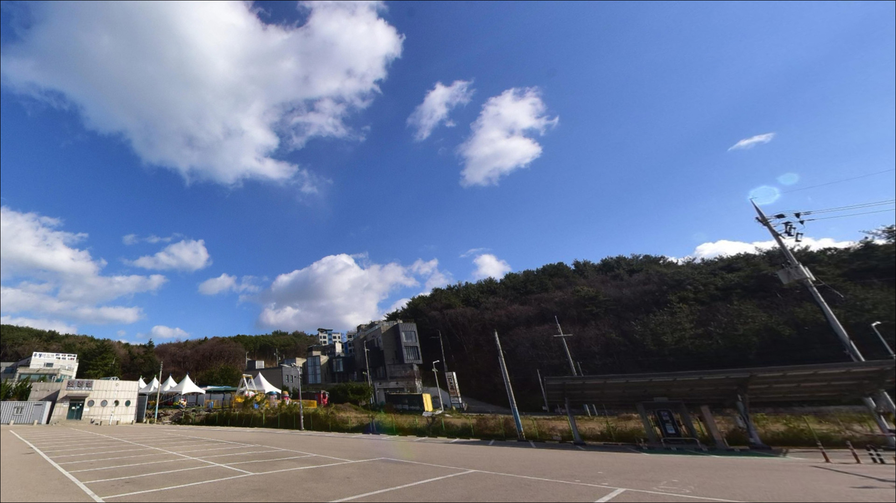
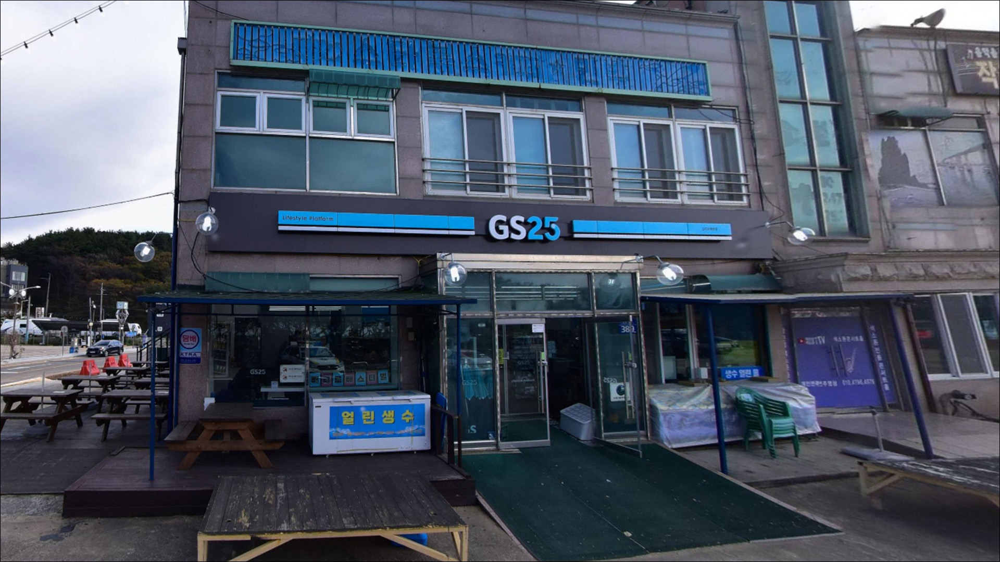
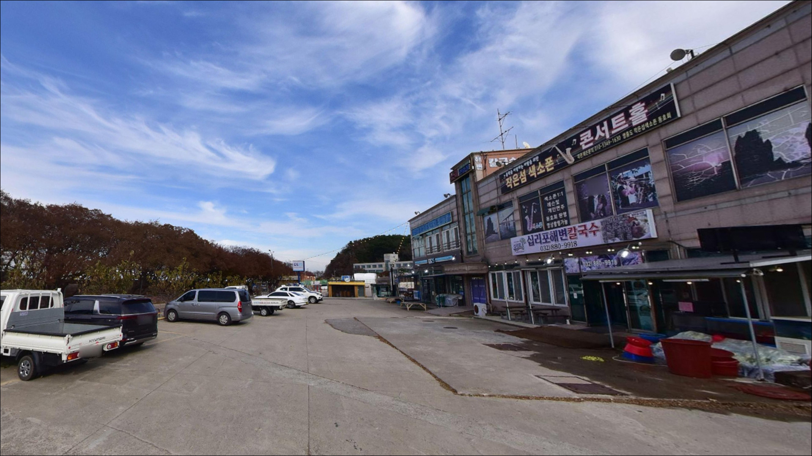

이 페이지에는 광고(제휴 링크 포함)가 있으며, 광고 링크를 통해 구매하면 운영자가 판매 수익 또는 수수료를 받을 수 있습니다. 포인트 사진: 카카오맵 스카이뷰·로드뷰. 이 페이지의 지도·사진 이미지는 카카오맵의 실제 서비스 이미지와 다를 수 있습니다.


십리포해수욕장 공영주차장, 영흥도 인천 옹진군 자연 그대로의 분위기에서 차박, 낚시를 즐기기 좋은 포인트
포인트 안내
십리포해수욕장 공영주차장
인천 옹진군 영흥면 내리 724-91
서해 해변 포인트에서 가장 많이 틀리는 판단은
물때를 확인하지 않고 움직이는 것입니다.
간조 시간대에 도착하면 넓은 갯벌만 드러나 있고,
어떤 채비를 써도 내릴 수심이 형성되지 않습니다.
십리포는 특히 조차가 큰 서해 해변 구조라
만조 전후 타이밍 계산이 출조 준비의 시작입니다.
이 글은 영흥도 내리,
십리포해수욕장 공영주차장 일대의
진입 여건, 차박 환경, 물때 판단 기준,
낚시 스타일별 공략 조건에 집중합니다.
조황 단정이나 특정 어종 보장은
이 글의 범위에 포함되지 않습니다.

1. 포인트 위치 및 진입 동선
영흥도 진입은 선재대교와 영흥대교를 순서대로 건너는 방식입니다.
두 다리를 통과하면 영흥북로를 따라
해수욕장 방면으로 이어지는 포장도로가 연결되어 있어,
진입 자체는 어렵지 않은 구조입니다.
성수기에는 다리와 진입로 구간에서
차량 정체가 생기는 편이라,
당일 이른 출발이 여유 있는 이동을 만드는 조건입니다.
십리포해수욕장 공영주차장은
190면 규모의 공영 노외주차장으로
해변 바로 앞에 위치해 있습니다.
주차 후 해변까지는 도보로 이동하는 구조이며,
주차장 내부에서 회차가 가능한 편이라
대형 SUV나 캠핑 차량도 진입과 회차는 무난한 편입니다.
단, 성수기 주말에는 주차 대기가 발생할 수 있어
사전에 감안하고 출발하는 것이 좋습니다.
주차장은 유료로 운영됩니다.
방문 전 운영 시간과 요금 정보를
옹진군 또는 주차장 관리처에 미리 확인하고 가는 편이 안전합니다.

2. 차박 환경 및 야간 체류 여건
십리포해수욕장은 관광지 특성상
야간에도 주차장 주변으로 조명이 갖춰져 있는 편입니다.
서쪽으로 탁 트인 개방형 해변이라
완전한 고립감보다는 기본 가시성이 확보된 분위기에 가깝습니다.
인천공항 방면 야경이 보인다는 기록이 있을 만큼
수평선 쪽이 열려 있는 구조입니다.
서해를 직접 면한 구조여서
늦가을과 겨울철 북서풍 영향이 있는 편입니다.
바람이 강한 날에는 차 안에서도
흔들림과 소음이 느껴질 수 있어,
기상청 풍속 예보는 출발 전에 반드시 확인하는 것이 기본입니다.
성수기에는 야영장이 해변 인근에서 별도 운영되는 편이나,
공영주차장 내 취사나 야영은 관리 규정 확인이 먼저입니다.


3. 주변 편의시설 및 인프라 현황
해수욕장 입구 주변으로
편의점과 식당이 모여 있는 편입니다.
GS25 편의점이 영흥북로 인근에 있으며,
십리포마트도 같은 방면에서 확인됩니다.
성수기 이외 시즌에는 운영 상황이 달라질 수 있으니,
비수기 방문이라면 식재료와 연료를
출발 전 갖춰가는 것이 안전합니다.
응급 상황 발생 시 영흥도 내 의료 시설은
규모가 크지 않을 수 있습니다.
큰 병원이 필요한 경우에는
영흥대교를 건너 육지로 이동해야 하므로,
비상약품과 응급 연락처는
출발 전에 준비해두는 것이 기본입니다.

4. 방문 전 반드시 챙겨야 할 준비사항
십리포 방문에서 가장 먼저 해야 할 일은
바다타임에서 영흥도 기준 물때를 확인하는 것입니다.
서해 조차 특성상 간조 전후에는 갯벌이 넓게 드러나
낚시가 사실상 불가능한 구간이 생기는 편입니다.
만조 2시간 전후를 기준 타이밍으로 잡고
출발 시각을 역산하는 것이 이 포인트 공략의 핵심입니다.
원투낚시를 목적으로 간다면
채비 여분을 넉넉하게 챙겨두는 것이 좋습니다.
해변 구조 특성상 봉돌 손실이 생길 수 있으며,
조류 흐름에 따라 봉돌 무게가 달라지기 때문에
20~50호 범위에서 다양하게 준비해가는 편이 유리합니다.
갯바위로 접근할 경우에는
구명조끼와 논슬립 신발이 필수입니다.
서해는 물빠지는 속도가 예상보다 빠를 수 있어,
갯바위 진입 전 만조 시간을 재확인하는 것이 안전 원칙입니다.
야간 접근 시에는 헤드랜턴을 반드시 지참해야 합니다.

5. 물때를 알아야 낚시가 되는 이유 — 십리포 지형 분석
십리포해수욕장은 방파제나 내항 구조가 아닌,
서해를 직접 면한 개방형 해변 포인트입니다.
왕모래와 자갈이 혼합된 해변으로
완만한 경사 지형이 이어지며,
조류와 수심이 물때에 따라 크게 달라지는 구조입니다.
간조 시에는 갯벌이 넓게 노출되어
채비를 내릴 수심 자체가 줄어드는 편입니다.
해변 끝단 방향으로는 갯바위 지형이
형성되어 있는 것으로 알려져 있습니다.
만조 시 갯바위 주변으로
2~4m 안팎의 수심 구간이 생길 수 있어,
루어낚시나 찌낚시 자리로 탐색해볼 만한 구간입니다.
다만 갯바위는 조류 변화가 빠른 편이라
물빠짐 속도를 사전에 파악하고 진입하는 것이 기본입니다.
원투낚시란 무거운 봉돌을 달아
채비를 멀리 캐스팅하여 바닥층 어종을 노리는 낚시 방식으로,
서해 모래 해변에서 가장 일반적으로 사용되는 형태입니다.
조차란 만조와 간조 사이의 수위 차이를 말하며,
서해는 이 차이가 큰 편에 속합니다.
십리포가 위치한 영흥도 인근 해역은
사리 전후에 조류가 빠르게 형성될 수 있어,
조금 전후나 만조 전후가 낚시하기 편한 타이밍이 되는 편입니다.
최신 조황은 출조 전에 "십리포 낚시" 또는
"영흥도 조황"으로 검색해 보시기 바랍니다.


6. 십리포 지형에 어울리는 낚시 스타일
이 포인트에서 가장 기본이 되는 낚시는 원투낚시입니다.
왕모래와 자갈이 혼합된 해변 구조는
서해 해변 원투 패턴과 잘 맞는 지형 조건이며,
망둥어와 붕장어가 기대 대상이 되는 편입니다.
가을 시즌 만조 전후가
망둥어 원투낚시 적기에 해당하는 구간입니다.
갯바위 방면으로 접근이 가능한 만조 전후에는
루어낚시와 찌낚시도 노려볼 만합니다.
영흥도 일대 갯바위 해역은
노래미와 우럭이 기대 어종으로 알려져 있으며,
농어 루어낚시도 만조 직후
갯바위 끝단에서 시도해볼 수 있는 스타일입니다.
지그헤드 채비나 웜 계열이 이 지형에 어울리는 편입니다.
9~11월 가을 시즌에는 에깅도 선택지 중 하나입니다.
서해 서북부 권역에서
주꾸미와 갑오징어 시즌이 맞물리는 시기이며,
갯바위 주변 수심 구간이 생기는 만조 전후에
에기를 사용하는 방식이 이 해변 지형과
가장 잘 맞는 계절 낚시 스타일입니다.
수심이 얕은 구간이 많기 때문에
만조 타이밍을 벗어나면 에깅 가능 구간이 급격히 줄어드는 편입니다.

7. 대안 포인트와 플랜 B 동선
십리포해수욕장 낚시 여건이 여의치 않을 때
가장 먼저 고려할 대안은
진두항 방파제입니다.
십리포에서 차로 15분 안팎 거리이며,
테트라포드로 구성된 방파제 구조로
주꾸미·갑오징어·망둥어·우럭 등
다양한 어종을 노릴 수 있는 포인트로 알려져 있습니다.
진두항 방파제는 십리포 조황이 여의치 않을 때
이 권역에서 가장 먼저 이동해볼 만한 대안입니다.
영흥대교 인근도 루어낚시꾼들이 찾는 포인트입니다.
다리 주변으로 조류 흐름이 살아 있는 편이어서
루어낚시에 유리한 조건이 형성될 수 있으며,
진두항 이동 동선에서 자연스럽게 들를 수 있는 위치입니다.
차박 대안으로는
같은 영흥도 내 장경리해수욕장을 고려할 수 있습니다.
주차 여건이 넓다는 기록이 있으며,
성수기 이외 시즌에는 현장 상황을 확인하고
이동 여부를 판단하는 방식이 무난합니다.

원투와 에깅, 물때 하나로
십리포의 조건이 달라집니다
서해 해변 원투낚시에 익숙한 낚시인이라면
십리포는 물때만 잘 맞추면
충분히 의미 있는 자리입니다.
모래·자갈 혼합 해변에서 망둥어와 붕장어를 노리는 원투낚시,
갯바위 방면의 루어와 에깅까지
복수의 낚시 스타일을 운용할 수 있는 구조입니다.
다만 본격적인 방파제 낚시를 원하는 낚시인이라면
십리포를 단독 목적지로 삼기보다는
진두항 방파제와 묶어서 이동하는 구성이 더 현실적입니다.
영흥대교를 건너는 경로가 하나뿐이기 때문에
출발 시각과 물때를 미리 계산해두면
헛걸음 없이 움직이는 조건이 갖춰집니다.
공영주차장 190면이 해변 앞에 붙어 있어
낚시를 마치고 조용히 하룻밤 머무는 차박 구성도 나쁘지 않습니다.
물때 하나만 잘 잡아두면,
영흥도 서해 해변의 낚시와 차박을
한 번에 즐기기 충분한 출조가 됩니다.